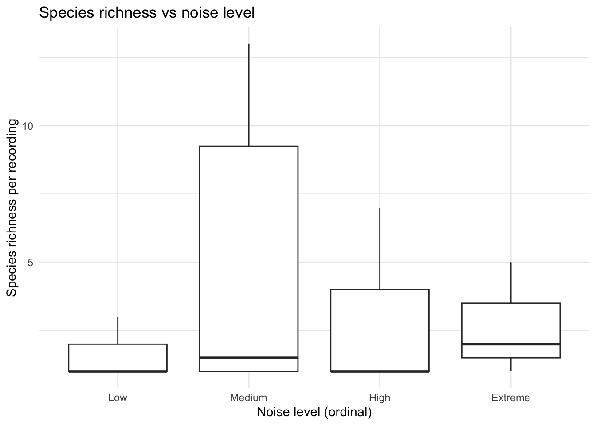
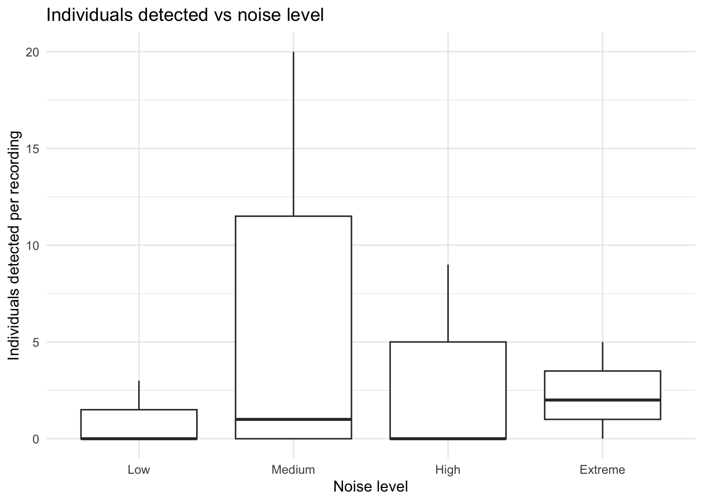

Report on the use of passive acoustic monitoring for songbirds and seabirds on Lanz and Cox Islands
Note
This report is dynamically generated, meaning its results may evolve with the addition of new data or further analyses. For the most recent updates, refer to the publication date and feel free to reach out to the authors.
Abstract
Passive acoustic monitoring was conducted on Lanz and Cox Islands to characterize seabird and songbird communities across multiple breeding seasons prior to invasive mink and raccoon eradication. Autonomous Recording Units (ARUs; SM4) were deployed at 0 locations and analyzed using a combination of machine-learning algorithms and expert validation. This report summarizes species presence, temporal patterns of detection, and relative abundance for seabirds and songbirds, and provides spatial representations of detections across both islands. These results establish a pre-eradication baseline to support evaluation of seabird prospecting activity and future changes in songbird communities following invasive predator removal.
Land Acknowledgement
Introduction
Lanz and Cox Islands support important seabird and songbird habitats, yet populations have been negatively affected by the presence of invasive predators, including mink and raccoon. As part of a broader restoration initiative, passive acoustic monitoring was implemented to document avian community composition prior to eradication activities. Autonomous recording units (ARUs) were deployed across both islands over three breeding seasons to capture vocal activity of seabirds and songbirds. Acoustic data were processed using the WildTrax data management platform in combination with BirdNET and HawkEars machine-learning algorithms, with detections verified using expert review informed by prior experience in marine acoustic environments. This report presents the results of these analyses, including species detected, timing of detections, relative abundance metrics, and spatial patterns of occurrence. Together, these data provide a baseline against which post-eradication monitoring can be compared to assess project outcomes and ecological recovery.
Methods
Data collection


# A tibble: 13 × 14
location_id recording_id task_id species_common_name confidence organization
<int> <dbl> <dbl> <chr> <dbl> <chr>
1 557160 3334390 3364837 Marbled Murrelet 0.925 BCSI
2 557160 3598578 3364852 Marbled Murrelet 0.851 BCSI
3 557160 3598698 3364855 Marbled Murrelet 0.967 BCSI
4 557160 3599148 3364859 Marbled Murrelet 0.88 BCSI
5 557160 3599850 3364866 Marbled Murrelet 0.802 BCSI
6 557160 3601232 3364878 Marbled Murrelet 0.876 BCSI
7 557957 3606988 3364880 Marbled Murrelet 0.921 BCSI
8 557957 3609580 3364898 Common Murre 0.939 BCSI
9 557959 3617005 3364920 Marbled Murrelet 0.816 BCSI
10 557959 3617842 3364926 Marbled Murrelet 0.884 BCSI
11 557959 3617979 3364931 Marbled Murrelet 0.822 BCSI
12 557979 3611414 3364908 Marbled Murrelet 0.912 BCSI
13 557979 3612564 3364913 Marbled Murrelet 0.813 BCSI
# ℹ 8 more variables: version <chr>, location <chr>,
# recording_date_time <dttm>, recording_length <dbl>, scientific_name <chr>,
# species_code <chr>, ai_detection_time <dbl>,
# is_species_allowed_in_project <lgl>Data management, processing and quality control
All recordings were uploaded to WildTrax in order for the data to be accessible and stored.
Community data processing
For each sampling location and year, a total of nine autonomous recording unit (ARU) recordings, each 3 minutes in duration, were analyzed to characterize the songbird community. All vocalizing species were identified, and the abundance of each species was estimated using a count-removal framework based on time-to-first-detection, which helps reduce positive bias associated with repeated detections of the same individual within a recording. Recordings were intentionally distributed across diel periods to capture variation in vocal activity. Five recordings were selected during the dawn period (04:00–07:59), when songbird detectability is typically highest. Two recordings were selected during dusk (19:00–22:59), and two during the night (23:00–03:59), allowing for detection of crepuscular or nocturnally active species and providing a more complete representation of the avian community. This standardized temporal sampling design ensured consistent effort across locations and years while maximizing detectability across species with differing activity patterns.